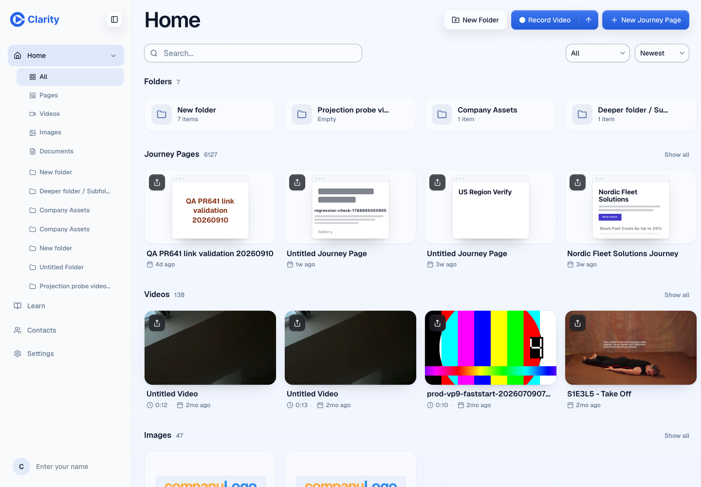

PR #646, local editor on a test account. Outlines are built from the stored page documents, the same way the router now attaches them. 70 of 71 page cards draw a mini page; the one showing its name is a deleted page.
